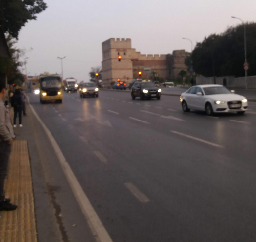
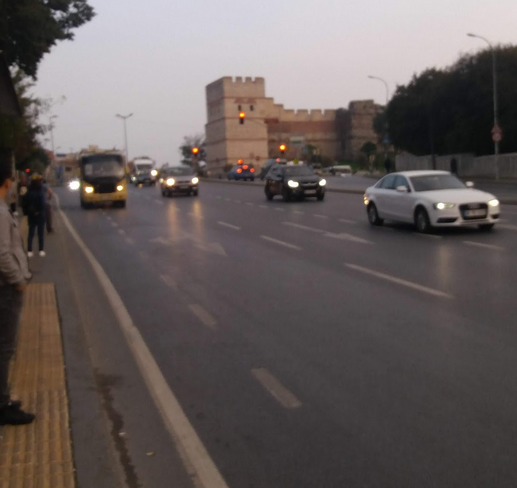

Since those times, the city may have grown incredibly large but this road is still mainly intact -- well, at least for the parts that are inside the city, until it connects to the highway.
 

Some people of Istanbul say that Edirnekapı is like a compass. If get here, you can find your way to anywhere in the city. And I compltely agree with that, I live quite near this place and whenever my bus or my tram reaches here, I feel quite safe, knowing that I can take a bus that comes every five minutes and be home in a short period of time.
And wouldn't you know it, after hundreds of years, Edirnekapı still is a place where the road to Adrianopolis passes through. The E-5 highway which also hosts the Metrobüs(BRT of Istanbul) passes right in front of the walls, and that makes Edirnekapı even more of an important transport hub.